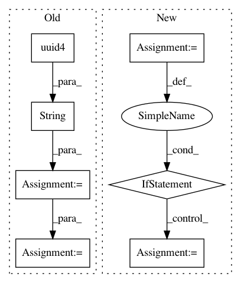

a31ae1708b62413c94ffae9fb6aab21b37f78212,petastorm/spark/spark_dataset_converter.py,,_cache_df_or_retrieve_cache_path,#Any#Any#Any#Any#,70
Before Change
:param compression_codec: Specify compression codec.
:return: A string denoting the path of the saved parquet file.
uuid_str = str(uuid.uuid4())
save_to_dir = os.path.join(cache_dir, uuid_str)
df.write \
.option("compression", compression_codec) \
.option("parquet.block.size", row_group_size) \
After Change
with _cache_df_meta_list_lock:
df_plan = _get_df_plan(df)
for meta in _cache_df_meta_list:
if meta.row_group_size == row_group_size and \
meta.compression_codec == compression_codec and \
meta.df_plan.sameResult(df_plan):
return meta.data_path
// do not find cached dataframe, start materializing.
cached_df_meta = CachedDataFrameMeta.create_cached_dataframe(
df, parent_cache_dir, row_group_size, compression_codec)
_cache_df_meta_list.append(cached_df_meta)
return cached_df_meta.data_path
In pattern: SUPERPATTERN
Frequency: 3
Non-data size: 7
Instances
Project Name: uber/petastorm
Commit Name: a31ae1708b62413c94ffae9fb6aab21b37f78212
Time: 2020-03-12
Author: weichen.xu@databricks.com
File Name: petastorm/spark/spark_dataset_converter.py
Class Name:
Method Name: _cache_df_or_retrieve_cache_path
Project Name: OpenMined/Grid
Commit Name: 3fbdebd49ce6a24b3d0ef6731942996b621cda67
Time: 2020-07-01
Author: hericles.me@gmail.com
File Name: grid/app/main/events/fl_events.py
Class Name:
Method Name: authenticate
Project Name: HyperGAN/HyperGAN
Commit Name: bd090db61ce516a22c8c433bec29a9be7c1c62a2
Time: 2017-06-28
Author: mikkel@255bits.com
File Name: examples/alignment.py
Class Name:
Method Name: